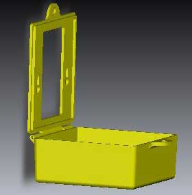

Alba Gas Innovations - SwitchSafe®

With the recent addition of Part P to the building Regulations safety issues have been raised and recorded regarding safe isolation in domestic premises for all trades.
SwitchSafe is suited to all domestic trade types such as Gas, Electric, Plumbing etc. and other non electrically competent DIY enthusiasts. It enables the user to work in a safe, confident and competent manner whilst being safe the knowledge that the circuit is isolated locally without the need to isolate at the Mains Consumer Unit.
Switch Safe was originally created for Gas Central Heating Installation Engineers who were installing full Central Heating Systems or replacing Cylinders. There was a need for them to safely isolate 25Amp Double Pole switches for Hot Water Cylinders. Unfortunately, this meant that in order safely isolate to required standards, the Engineers had to isolate at the Main Consumer Unit to work at the Cylinders.
In most circumstances the Engineers only isolated at the 25Amp Double Pole switch (normally remotely located in the Kitchen), cut the Immersion cable and worked on until an Electrician arrived.
This put both Engineers and the Customer at risk.
All of our research proved that all Tradesmen, with the exception of Electricians, were reluctant to Isolate and or work at the Mains Consumer Unit. This was proved to be mostly due to fear, inexperience, lack of Training, inaccessibility and or negligence.
From these simple beginnings of finding a solution to removing a Cylinder, Switch Safe has expanded to meet the market demand. In particular, the Health and Safety divisions of various companies are keen to put the emphasis of simple safe isolation back onto the Engineer.
Mains Consumer Units.
At a recent survey, approximately over 65% of all domestic Mains Consumer Units are unmarked or incorrectly labelled. A further 38% were classed at Code 2, requires improvement standard. A non-electrically trained Engineer may generally elect to isolate at the mains cut off switch. Subsequently, this may mean working under difficult conditions such as:
- Torchlight working.
- Torchlight working at height or inaccessible locations.
- Inability to use Power Tools.
- Disconnecting Fire/Burglar Alarms.
- Disconnecting of Freezer circuits.
- Customer Inconvenience.
- Added risk assessments due to these circumstances.
- Added man hours due to restrictive circumstances.
Resourcing and Manpower.
Do you really need to send that Electrician today? Or can the non Electrical Engineer Safely Isolate until the Electrician attends? SwitchSafe provides a localised safe isolation barrier that may help with Manpower issues.
Its simplicity, ease of usage and low price ensures that there are no real reasons why all Engineers should not carry SwitchSafe.
There always appears to be a confusion regarding trade ownership of work. This confusion may lead to more man-hours, more work and inevitably reduced customer satisfaction and retention.
All trade types and DIY enthusiasts are deemed competent enough to use SwitchSafe.
View an eDrawings file of SwitchSafe®
Click here to download or view the SwitchSafe® eDrawings file.Please note: This file requires SolidWorks eDrawings viewer to open.
 Click here to get eDrawings Viewer
Click here to get eDrawings Viewer
Alba Gas can take no responsibility for content contained on third party website. User discretion is advised.
SwitchSafe® Technical data
- Weight : 50 grams at room temperature.
- Material Type :. Made from 1.5 mm thick bonded Polypropylene plastic making the unit flexible, durable and hardwearing. The Living hinge mechanism has been tested to 1200 continual bends before fracture.
- Dimensions : Small at 900mm x 900mm x 35 mm, easily stored in a toolbox.
- Aesthetics : Any Colour requested. SwitchSafe can be manufactured baring a company logo if required.
- Warning Notice : A distinguishable label attached in a sticker form. Reduces the need for clumsy oversized warning notices. Note: This is an additional payment and has to be requested.
- Safe Isolation : SwitchSafe uses standard tie wraps to lock off or standard miniature lock and keys.
Under what circumstances would you commonly use SwitchSafe?®
- Safe isolation to avoid unwanted tampering.
- Safe isolation to avoid invalid warranty on appliances.
- Safe isolation for all maintenance and repair work on Cookers.
- Safe isolation for all maintenance and repair work on Showers.
- Safe isolation when replacing a Cylinder Heating element or full Cylinder Upgrades.
- Safe isolation during new Central Heating installation and removal of old system electrics
- Safe isolation of Fused Spur Units and associated circuits.
- Safe isolation of un-switched Fused Spur Units and associated circuits.
- Safe isolation of any single gang light switches (Wiring style permitting).
- Safe isolation without the need to work at the Mains Consumer Unit.
Commonly asked questions...
Question: Will SwitchSafe fit all Double Pole Switch manufacturer types?
Answer: The Switchsafe safety enclosure is suitable for all single gang 45 Amp Double pole switches and Pull-cords and all single gang Double Pole 25 Amp switches currently on the Market.
Question: What happens if the Switch machine screws come out?
Answer: Fit longer machine screws. Revert back to your original safe isolation plan carrying out any new risk assessments if necessary. Always contact a qualified Electrician if in any doubt.
Question: What is the lifespan of the unit?
Answer: SwichSafe has been tested to approximately 1200 bends before fracture
Question: I own my own Electrical Company. Where is the benefit in me supplying these units to my Staff who are already trained to safely isolate?
Answer: A lot of Electrical accidents happen to Electricians not because they are more at risk but because they chose not to carry out safe working practices. Any tool that can help with their Job is a bonus. If they chose not to use it and choose not to execute safe working practices then they could be deemed negligent.
Question: What's the point!! It will only roll around in my Engineers toolbox along with their Multimeter that they never use!!
Answer: Again, if they chose not to use it and choose not to execute safe working practices then they could be deemed negligent. At the low cost price you will find most Businesses do not object to covering their business integrity and placing the work safety ethic back to their Engineers
Cost?
£5.00 per Unit, exclusive of VAT. This offer would only be available on orders over 500 units.
Further Products?
For more information on PlugSafe® product, click here.Alba Innovations are currently working on several new products to meet our Market demands. Further information is currently not available for legal purposes. You can keep updated on our new products here on our Website.
SwitchSafe® User Guide
- Verify circuit to be isolated.
- Inform Customer.
- Turn off Fused Spur Unit or Double Pole Isolator Switch.
- Remove and retain Fuse. (If required on Fused Spur Units only)
- Unscrew machine screws to required length. This is approximately 1.5 to 2 mm.
- Open front cover of Switch Safe.
- Place Switch Safe over Machine Screws ensuring lock off Hole on back plate is at the top of the Fused Spur Unit or Double Pole Isolator.
- Slide Switch Safe firmly down until Machine Screws are in a locked position.
- Carefully tighten the Machine Screws onto Switch Safe.
- Fold Cover up into a closed position.
- Apply pad lock. (A20 Brass Padlock 3mm C00-068)
- Retain key.
- Verify safe Isolation on Circuit to be worked on.
- Prove Electrical Test Instrumentation
- Work safely.
In the unlikely event of the Machine screws being removed from the Electrical Back Box, carefully refit the Machine Screws. In the unlikely event of the Machine screws being too short to use Switch Safe, use longer Machine Screws.
Always consult a Qualified Electrician if in any doubt.
